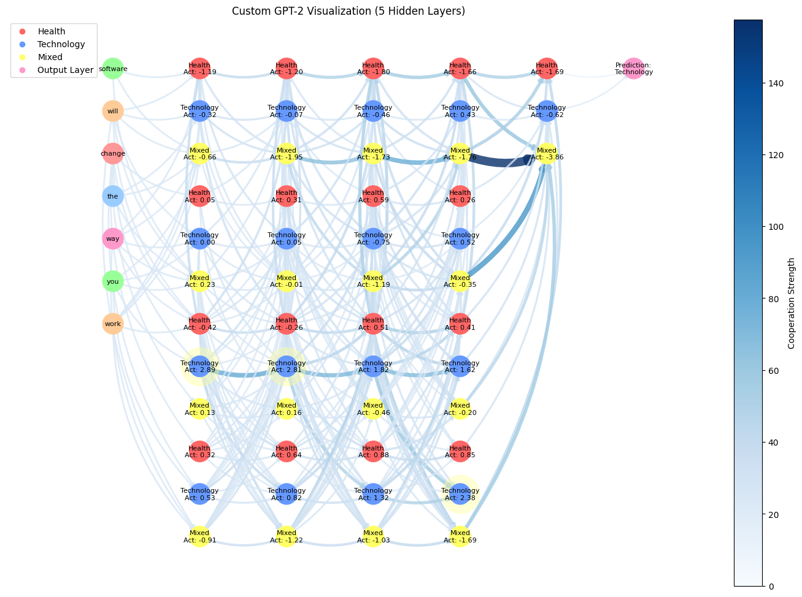

Introduction
This project started with a question that has always intrigued me: What exactly is the "black box" in AI systems? I came across an AI safety paper that explored this idea and explained how the internal workings of machine learning models are often hidden, making it hard to understand why they make certain decisions. This sparked my curiosity and got me thinking about how we might open up this black box to see what’s really going on inside.
To explore this, it’s helpful to understand how neural networks learn. At their core, neural networks are systems designed to recognize patterns in data. They are trained by being shown large amounts of examples like sentences, images, or numerical data—and adjust their internal connections, called weights, to improve their predictions. Over time, this process, known as backpropagation, allows the network to generalize patterns it has learned during training to new, unseen inputs.
For instance, imagine teaching a neural network to recognize animals in pictures. The input layer of the network might receive the raw image data. The first layers detect basic features, like edges or colors, while deeper layers combine these features to recognize specific shapes, such as a paw or a tail. The final layer outputs the prediction, like "cat" or "dog." This hierarchy of processing from simple to complex is what makes neural networks so powerful, but it’s also what makes them difficult to interpret (Carter et al., 2019).
While reflecting on this, I wondered about the difference between large and small language models. If we understand how smaller models work, shouldn’t larger models function in a similar way? At first, I thought the problem was simply that larger models were harder to study because of their size. But the more I thought about it, the more I realized the real challenge might be in how these models generalize information—how they process and combine different topics or concepts across layers (Bau et al., 2017).
This realization led me to another idea: Could this generalization be linked to what’s called “outer alignment”? Outer alignment focuses on whether the model’s overall objective (e.g., maximizing predictive accuracy) aligns with human goals or broader societal intentions. For example, while a model might be excellent at generalizing patterns from data, this doesn’t guarantee that its outputs will always align with what we consider desirable or safe. This stands in contrast to inner alignment, which deals with whether the model’s internal decision making processes are optimized to achieve the goals we’ve set.
Large language models (LLMs) are fundamentally advanced pattern recognition systems. When we feed them massive amounts of data, wouldn’t it make sense that they generalize based on those patterns? In that case, is generalization not just the model doing its job? This raised an important question: Could this natural function of pattern recognition still contribute to alignment challenges, particularly in cases where the generalization process leads to unintended or undesirable behavior?
These questions drove me to focus on visualizing topic overlaps in neurons as a way to uncover how generalization manifests. By exploring how neurons activate for overlapping or mixed topics, I hoped to identify patterns that might reveal insights into how information flows through neural networks and whether these patterns could inform our understanding of alignment issues .
Motivation
Visualizing neuron interactions is critical for advancing AI safety and alignment. Neural networks, particularly large language models (LLMs), operate as complex systems with millions of interconnected neurons. While their performance has been impressive across a wide range of tasks, their inner workings often remain opaque. This lack of transparency poses significant challenges, especially when it comes to identifying biases, unintended behaviors, or potential failure points that could lead to harmful or unpredictable outcomes.
By focusing on how neurons cooperate and represent overlapping topics, we aim to address these challenges. Understanding the dynamics of topic overlaps allows us to see how models generalize information, handle ambiguity, and potentially encode biases within their layers. This knowledge could help in designing interventions to mitigate risks, ensuring that AI systems behave in ways that are safer, more reliable, and aligned with human values.
While this project is just one step in the broader field of interpretability research, it seeks to provide a novel perspective on neural network behavior. By visualizing neuron interactions, we hope to contribute insights that may eventually inform efforts to make AI systems more transparent and accountable. Although it remains an exploratory effort, the potential for uncovering useful patterns makes this a valuable starting point for further investigation.
What is Mechanistic Interpretability?
Mechanistic interpretability involves analyzing neural networks to understand what each neuron or group of neurons represents. As Olah (2022) explains, this process is similar to reverse engineering a compiled binary program, where the goal is to uncover the system’s mechanisms by carefully examining its components. Similarly, in neural networks, the objective is to break down the complex relationships between neurons and layers to uncover how they contribute to the model’s predictions.
This field is particularly relevant when exploring questions about generalization, biases, and decision-making in neural networks. Mechanistic interpretability doesn’t just aim to observe what a model does, it seeks to explain why it behaves a certain way. This approach provides a framework to investigate how specific patterns and representations emerge in neural networks and how they are propagated through layers.
In the context of this project, mechanistic interpretability serves as the foundation for visualizing how topics are represented and overlap in neurons. By applying its principles, the project aims to unravel how neurons cooperate to encode overlapping or mixed topics, providing a step toward understanding the inner dynamics of neural networks (Olah et al., 2020a).
Project Goals
This project focuses on addressing the following questions:
- How are topics represented in neuron activations?
- How do neurons work together across layers to process and generalize input data?
- Which visualization techniques can most effectively illustrate these interactions and overlaps?
Methods
Model Selection and Input Preparation
For this project, GPT-2 was selected due to its accessibility and its ability to provide comprehensive hidden state outputs...
Topic Definitions and Similarity Metrics
To investigate topic overlaps, topics were categorized as follows:
- Health: Terms like "health care," "wellness," and "medical treatment."
- Technology: Terms such as "AI," "software," and "automation."
- Mixed: General terms like "random discussions" and "neutral content."
Cosine similarity was used to measure the similarity between the embedding of the input sentence and predefined topic embeddings. Cosine similarity compares two vectors by calculating the cosine of the angle between them. This value ranges from -1 (completely dissimilar) to 1 (completely similar). In this context, embeddings are high-dimensional vectors that represent words or sentences numerically. By using cosine similarity, we were able to determine which topic a neuron was most closely associated with based on its activation pattern.
For example: If the embedding of the input sentence is closer to the embedding of "AI" and "software," the neuron is classified as being associated with the Technology topic.
Visualization Design
To explore how topics are represented and processed within the network, two types of visualizations were developed:
1. Neuron Activation Visualization
This visualization highlights individual neuron behaviors and their topic associations:
- Nodes: Each node represents a single neuron and is color-coded based on the assigned topic (e.g., Health, Technology, or Mixed).
- Layer Stucture: Neurons are displayed sequentially, starting with the input tokens and progressing through five hidden layers, culminating in the output layer. This layout illustrates the hierarchical processing of information within the network.
- Details: Each neuron’s activation and assigned topic are clearly displayed, making it easier to observe how information flows and transforms across layers.
2. Cooperation Visualization
This visualization focuses on how neurons work together to process and generalize information:
- Edges: Connections between nodes represent cooperation strengths, calculated based on the similarity of activations between neurons.
- Edge Weights: The thickness and darkness of an edge indicate the strength of cooperation, with thicker, darker edges representing stronger connections.
- Overlap Highlighting: Neurons activated for multiple topics are specially marked to emphasize their role in encoding overlapping concepts. These neurons reveal the network's ability to handle ambiguity and generalization.
Tools
The following tools and libraries were used to implement the visualizations:
- PyTorch: For processing the model, extracting hidden states, and analyzing neuron activations.
- Matplotlib and NetworkX: For creating clear, visually engaging, and interactive graphs to represent neuron activations and cooperation.
- NumPy: For computing cosine similarity to classify neurons based on their activations and topic associations.
You could also integrate feature attribution methods from libraries like Captum for more advanced analysis (Kokhlikyan et al., 2020), though this project primarily uses a custom graph-based visualization.
Findings and Analysis
The graph below illustrates how the input sentence "Software will change the way you work" propagates through GPT-2, from the input layer to the output layer:
Key Observations
Input Layer
The input tokens are color-coded and serve as the starting point for computation within the network. Each token initializes the network’s processing, setting the foundation for subsequent transformations across layers.
Hidden Layers
Neuron Activations: Neurons in the hidden layers show activations associated with topics such as Health, Technology, and Mixed.
Cooperation: As information flows to deeper layers, cooperation between neurons becomes more pronounced, depicted by thicker, darker edges in the graph. This indicates that deeper layers perform more abstract and topic-specific processing.
Cooperation Highlights
Neurons activated for multiple topics are specifically marked to emphasize their multi-functional roles. These neurons reveal the model’s capacity to handle overlapping or ambiguous concepts, contributing to multiple topics simultaneously.
Output Layer
The network predicts the most relevant topic for the input sentence. In this case, the output aligns with the sentence's focus on Technology, reflecting the model’s ability to generalize from input patterns.
What we Learned
Generalized Neurons: Some neurons consistently activate for multiple topics, demonstrating their ability to generalize across diverse inputs. These neurons may play a critical role in handling overlapping information.
Cooperation Dynamics: The strength of neuron cooperation varies across layers, with deeper layers showing stronger and more complex connections. This suggests that higher-level abstraction and integration occur in these layers, contributing to the model’s ability to process and represent complex topics.
Limitations
While this project provides valuable insights into neuron activations and topic overlaps, it is important to acknowledge several limitations:
Tokenization Issues
The tokenization process occasionally resulted in repeated tokens, potentially skewing the representation of the input sentence. This may have introduced noise into the analysis, affecting the accuracy of topic assignments and neuron activations.
Focus on Activations
The project focused exclusively on neuron activations, overlooking other important factors such as attention patterns (Vig, 2019) and weight updates. These components also play a significant role in generalization and may provide complementary insights into how neural networks process and represent information.
Simplistic Topic Definitions
The broad topic categories (e.g., Health, Technology, Mixed) limited the level of granularity in the analysis. More specific and detailed topic definitions could yield deeper insights into how neurons specialize and cooperate within the network.
Similar Works
There have been many efforts to understand how neurons in neural networks activate and interact. NeuroCartography clusters neurons based on similar concepts and visualizes their connections, while Network Dissection measures how well individual neurons align with human-interpretable concepts (Bau et al., 2017). The polytope lens approach looks at how networks break down input into distinct regions, helping to map how different features are represented. Another method, Concept Vectors, tries to separate neurons that respond to multiple unrelated features by breaking them into clearer representations. Research on channel redundancy also suggests that multiple neurons often capture the same information in different ways. All these studies suggest that neurons do not work in isolation but instead interact and sometimes overlap in the concepts they detect.
My project explores a similar idea, focusing on how topic overlaps appear in neurons as input moves through a network.
Broader Implications
Understanding neuron cooperation and topic overlaps represents an important step toward making large language models (LLMs) more interpretable and safer. By shedding light on how information flows through the network and how neurons contribute to overlapping or ambiguous representations, this project provides insights into the inner workings of neural networks. These visualizations serve as tools for identifying potential areas of concern, such as biases embedded in the model’s representations or ambiguous activations that could lead to unpredictable behavior. Pinpointing such issues is crucial for enhancing AI safety, as it allows researchers and developers to address risks proactively.
Furthermore, improving interpretability can foster greater trust and accountability in AI systems, particularly in high-stakes applications such as healthcare, law, and policy-making. By enabling a deeper understanding of how models generalize information, this work contributes to the broader goal of aligning AI systems with human values and ethical principles.
Future Work
To build on the insights from this project and address its limitations, several avenues for refinement and expansion can be explored:
Refining Topic Definitions
Introduce hierarchical or domain-specific topic categories to provide more granular insights into neuron activations and their associations with specific topics. This could uncover subtle patterns and improve interpretability.
Exploring Attention Mechanisms
Incorporate attention head visualizations alongside neuron activations to offer a fuller picture of the decision-making processes within the network. Understanding how attention mechanisms interact with activations can provide a more holistic view of how information is processed and generalized.
Dynamic Inputs
Test the visualization framework with a diverse range of input sentences to evaluate the model’s generalization capabilities across varied contexts. This approach can help identify whether the observed patterns hold consistently across different domains and input complexities.
Advanced Visualization Techniques
Apply dimensionality reduction techniques, such as t-SNE or PCA, to project high-dimensional activation patterns into a more interpretable, low-dimensional space. These techniques can improve the clarity and effectiveness of the visualizations, making them more intuitive for analysis and interpretation.
References
- Olah, C., et al. (2020). "Circuits: Zoom In on the Inner Mechanisms of Neural Networks." Distill. https://distill.pub/2020/circuits/
- OpenAI (2019). "Language Models are Few-Shot Learners." arXiv preprint. https://arxiv.org/abs/2005.14165
- Olah, C., Mordvintsev, A., & Schubert, L. (2017). "Feature Visualization." Distill. https://distill.pub/2017/feature-visualization/
- Olah, C. (2022). "Mechanistic Interpretability, Variables, and the Importance of Interpretable Bases." https://www.transformer-circuits.pub/2022/mech-interp-essay
- Amodei, D., Olah, C., Steinhardt, J., Christiano, P., Schulman, J., & Mané, D. (2016). "Concrete Problems in AI Safety." arXiv preprint. https://arxiv.org/abs/1606.06565
- Carter, S., Prabhakaran, V., Maynez, J., Tian, L., Goodfellow, I., & Raffel, C. (2019). "Activation Atlas." Distill. https://distill.pub/2019/activation-atlas/
- Kokhlikyan, N., Miglani, V., Martin, M., Wang, E., Reynolds, J., Melnikov, A., Capitanu, B., Espinosa, J. R., & Martin, I. (2020). "Captum: A unified and generic model interpretability library for PyTorch." arXiv preprint. https://arxiv.org/abs/2009.07896
- Olah, C., Satyanarayan, A., Johnson, I., Carter, S., Schubert, L., Ye, K., & Mordvintsev, A. (2020b). "The Building Blocks of Interpretability." Distill. https://distill.pub/2018/building-blocks/